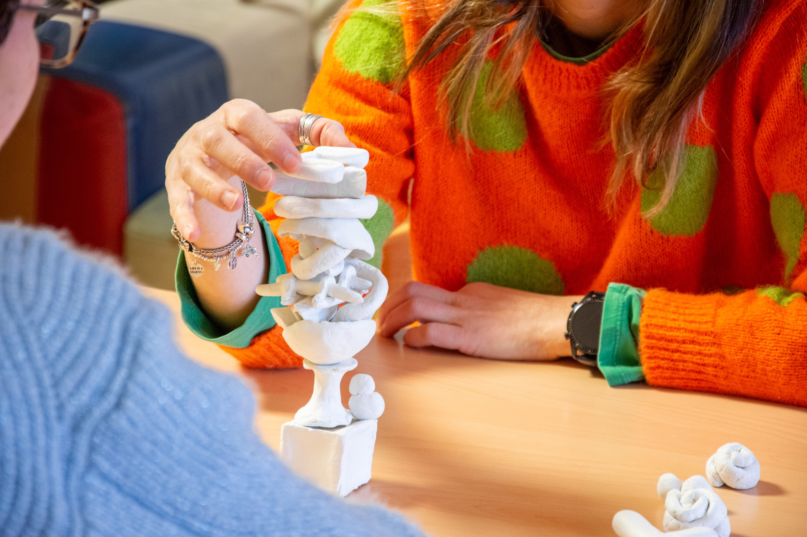
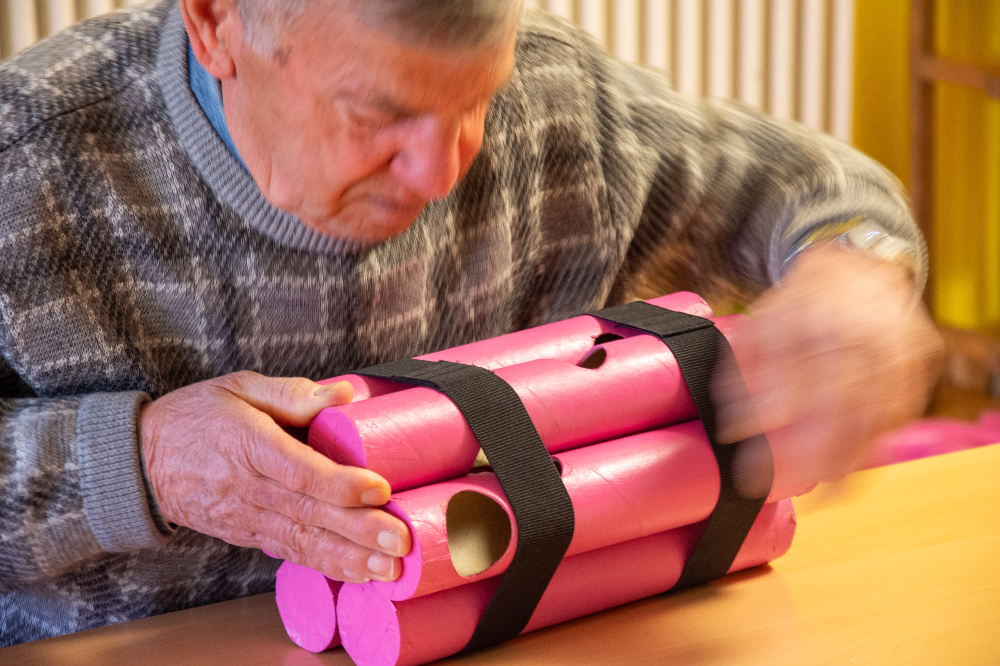
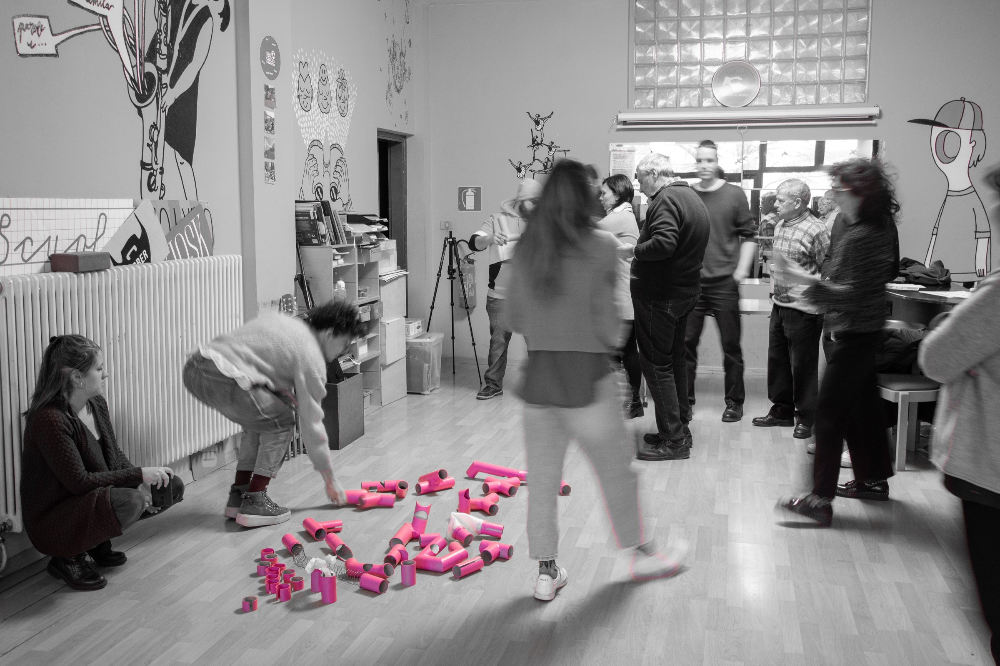
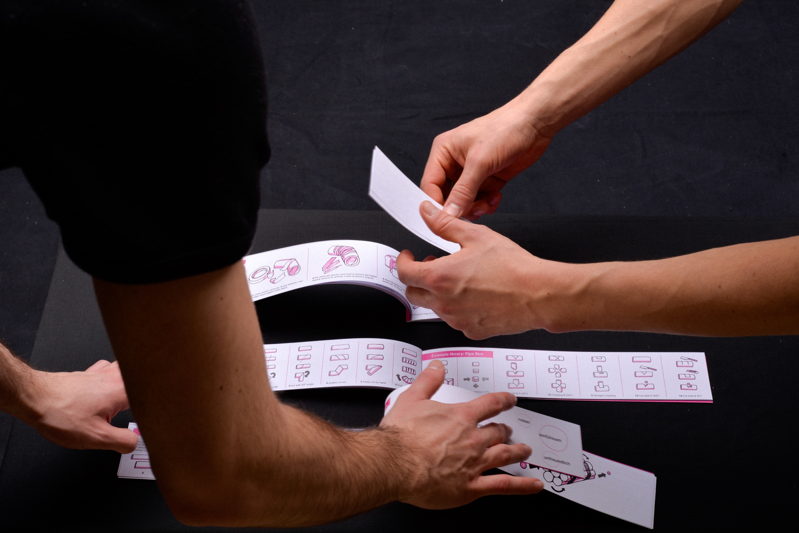
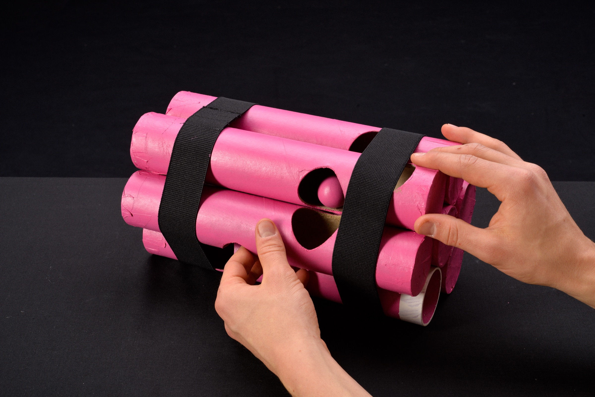
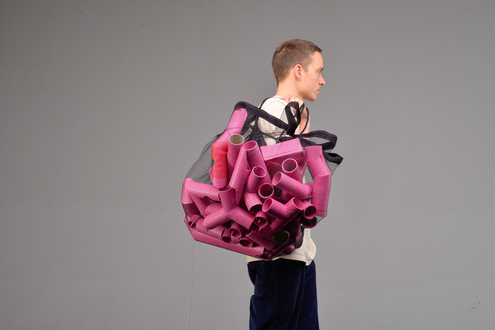

CareFull Instruments
Designing instruments for Apprendimento Esperienziale

Project Overview
Developed during the "Project 1" course at the Free University of Bolzano, "CARE(FULL) INSTRUMENTS" is a collaborative design effort by Matteo Antonazzo, María Palacios Armesto, Printr Chatjaroenchaikul, and Maximilian Stahl. The team partnered with Officine Vispa (thanks Giuseppe!), a social organization in the Don Bosco Community, to explore and support the practice of "Apprendimento Esperienziale" (Experiential Learning). This methodology uses guided activities to address problem situations and improve social dynamics within groups such as families, young couples, or work teams.
Ethnographic Approach
Adopting an ethnographic approach, we participated in community activities and tested prototypes directly with target groups and facilitators to understand the specific needs of local social workers - since we knew nothing about Apprendimento esperienzale in the first place. This research culminated in the development of four distinct interactive games: The pipe run, The tower of the knowledge, DYNA-MAZE, and My discomfort. Recognizing the budget constraints of non-profit organizations, the project heavily emphasizes an open-source, Do-It-Yourself philosophy. Also because we wanted to work with waste materials that the city itself produce.



DIY Kit and Guidebook
The team designed a comprehensive DIY kit and a practical guidebook that instruct facilitators on how to build these tools themselves. The games are designed to be constructed from easily sourced, recycled scrap materials and finished with non-toxic, cradle-to-cradle certified paint. All artifacts are painted in a vibrant pink to evoke playfulness, unconditional love, and to pique the curiosity of participants. Furthermore, the tools were deliberately designed to be adaptable for both indoor and outdoor use across different seasons.


Scalability and Future Scenarios
Beyond the physical prototypes, the project envisions (as a concept only) a scalable, glo-cal application for these tools. The documentation outlines a future scenario featuring a dedicated website and forum. This digital platform would serve as a collaborative hub for social workers worldwide to access the activities catalogue, download DIY building guides, share feedback, and map their experiential learning networks.
